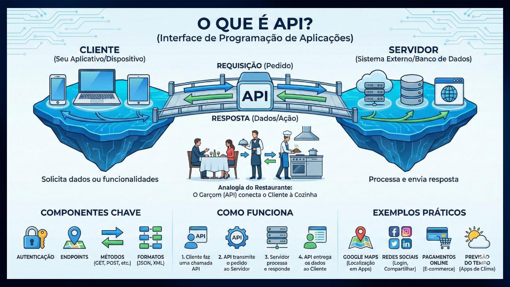
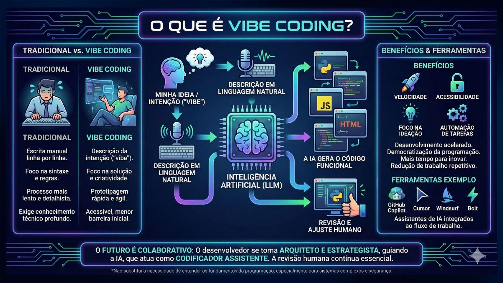
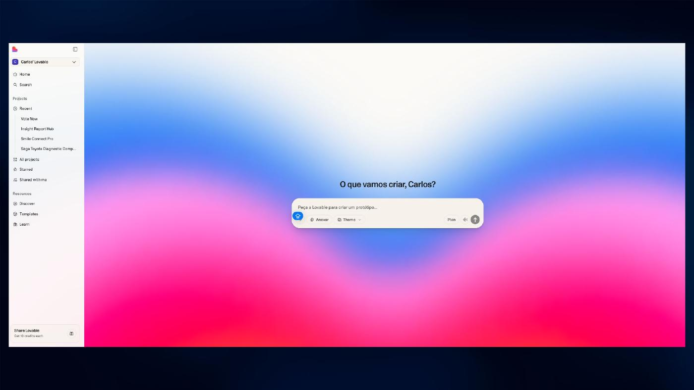
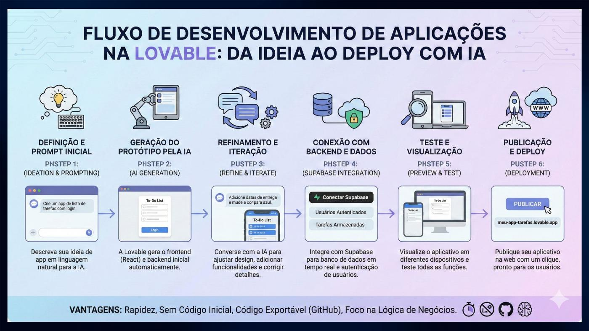
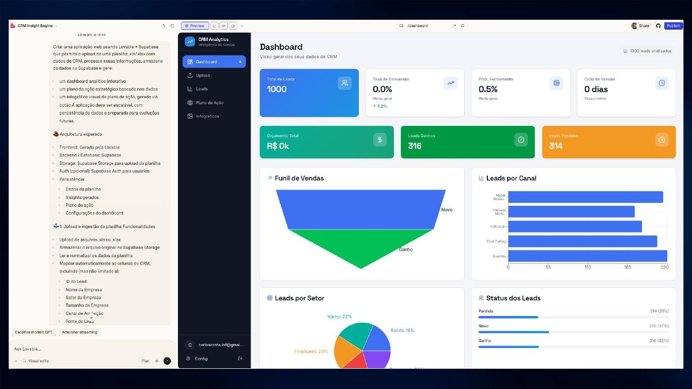
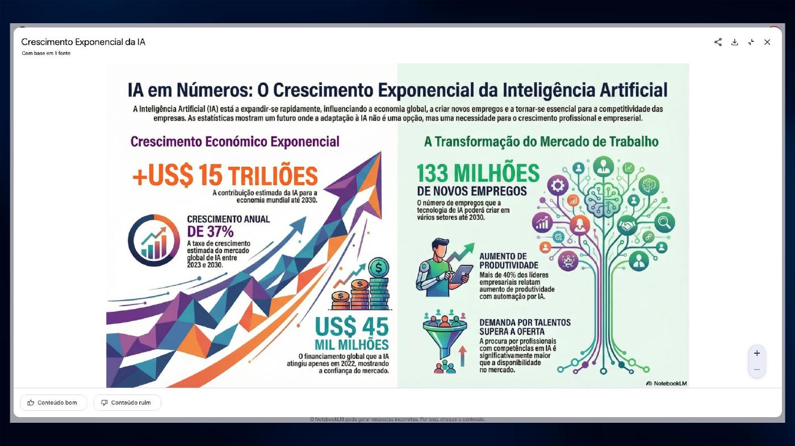

Curso: IA na Prática
Vibe Coding, Dados e Automações Simples
Página independente da imersão de Belém, estruturada sobre o deck do Carlos: primeiro entender processos, depois conectar dados e automações, e só então aplicar IA onde existe ganho real.

Agenda do deck-base
O que a aula precisa cobrir
- 01Vibe Coding: criando soluções com IA sem ser programador
- 02IA como copiloto para pensar, testar e construir
- 03Leitura e análise de dados com apoio de IA
- 04Transformando dados em decisões e ações automáticas
- 05Automações simples que economizam horas por semana
- 06Integração entre IA, dados e ferramentas do dia a dia
- 07Boas práticas para escalar sem complicar
Método AUT3
O eixo conceitual da condução
Processo estruturado
Antes de tecnologia: entender como o processo realmente acontece.
Automações inteligentes
Com processo definido, eliminar tarefa manual e conectar ferramentas.
IA em ação
Aplicar IA onde melhora receita, velocidade, qualidade ou custo.
Referência visual real
Slides do material do Carlos usados como base









Roteiro de condução 6h
Belém — Imersão 6h v4 com didática das mentorias
Objetivo
Letramento + prática com entrega real.
A turma deve sair com um projeto funcional e com a sensação de que atravessou uma fronteira:
“Eu não apenas usei IA. Eu construí um sistema com IA.”
Projeto-base recomendado
Assistente comercial com diagnóstico e qualificação automática.
É o melhor projeto-base porque:
- todo negócio entende lead, atendimento e proposta
- dá para adaptar por nicho
- exige interface, IA, dados e automação
- gera valor comercial claro
- parece produto de verdade ao final
Estrutura didática de cada bloco
Sempre repetir o mesmo ciclo:
- Problema real
- Pra que serve a plataforma
- Demonstração rápida
- Atividade prática
- Checkpoint obrigatório
- Valor de negócio
Esse padrão veio das mentorias: o aluno engaja quando entende o problema, vê funcionando e coloca a própria mão.
Agenda 6h
0. Abertura — o que vamos construir hoje (20min)
Mensagem:
IA não é o produto. O produto é o sistema que resolve um problema.
Mostrar a arquitetura final:
Lovable → IA → Supabase → API/Automação → GitHub → Playbook
Entrega prometida:
Cada grupo vai sair com um assistente comercial capaz de:
- coletar dados de um lead
- analisar o perfil
- gerar diagnóstico
- sugerir próximo passo
- salvar histórico
- produzir mensagem comercial
- documentar a solução
1. Letramento: ferramenta vs sistema (35min)
Objetivo: mudar a cabeça antes da prática.
Conceitos:
- prompt avulso
- automação simples
- sistema inteligente
- agente
- banco/memória
- API
- versionamento
Analogias rápidas:
- Supabase = Excel organizado que sistemas conseguem ler e escrever
- GitHub = Drive do projeto com checkpoints
- API = tomada para uma ferramenta conversar com outra
- n8n/Make = mapa visual de uma operação
- IA = motor de raciocínio dentro do fluxo
Checkpoint: cada grupo escolhe um nicho e um problema comercial.
2. Lovable: interface que vende a ideia (55min)
Objetivo: criar o app visual.
Explicação:
Lovable é a camada de interface. Ele transforma a ideia em tela navegável.
Atividade:
Criar uma interface com:
- formulário de diagnóstico
- campos do lead
- campo de dor/problema
- botão de análise
- tela de resultado
Prompt-base:
Criar um aplicativo web de diagnóstico comercial para [NICHO]. O usuário deve preencher nome, empresa, telefone, principal problema, urgência, orçamento aproximado e objetivo. O sistema deve exibir uma tela limpa com diagnóstico, nível de prioridade e próximo passo sugerido.
Checkpoint: app publicado ou rodando com formulário funcional.
3. IA: análise e qualificação (50min)
Objetivo: fazer o app pensar.
Explicação:
A IA entra onde existe linguagem, interpretação, classificação ou decisão.
Atividade:
Criar prompt de qualificação com saída estruturada:
- resumo do lead
- dor principal
- maturidade
- urgência
- score de 0 a 100
- objeções prováveis
- próximo passo
- mensagem comercial sugerida
Checkpoint: cada grupo cola dados de teste e recebe uma análise útil, não genérica.
Frase didática:
Sem critério, IA escreve bonito. Com critério, IA decide melhor.
4. Supabase: memória do sistema (60min)
Objetivo: transformar demo em sistema.
Explicação:
Sem banco, a IA responde e esquece. Com banco, ela vira operação.
Atividade:
Criar tabela leads:
- id
- created_at
- nome
- empresa
- telefone
- nicho
- problema
- urgencia
- score
- diagnostico
- proximo_passo
- mensagem_sugerida
- status
Checkpoint: salvar pelo menos um lead no banco e visualizar o registro.
Analogia:
Supabase é como uma planilha viva, mas preparada para virar sistema.
5. API/Automação: ação operacional (45min)
Objetivo: o sistema produzir uma ação real.
Explicação:
Sistema bom não só analisa. Ele aciona o próximo passo.
Atividade simples:
Gerar automaticamente:
- mensagem de WhatsApp/e-mail
- tarefa comercial
- resumo para vendedor
Se houver tempo/ferramenta:
- webhook no Make/n8n
- envio para planilha/CRM
- simulação de notificação
Checkpoint: cada grupo tem uma saída operacional pronta.
Frase didática:
Automação é quando o sistema para de te informar e começa a trabalhar por você.
6. GitHub: estrutura profissional (30min)
Objetivo: mostrar o que separa brincadeira de produto.
Explicação:
Profissional versiona, documenta e consegue voltar atrás.
Atividade:
Criar um README do projeto com:
- problema resolvido
- público-alvo
- fluxo do sistema
- ferramentas usadas
- prompt principal
- próximos passos
Checkpoint: projeto documentado.
Frase forte:
Se você não sabe explicar e versionar, você não tem produto. Tem gambiarra funcionando por sorte.
7. Segundo cérebro/playbook: transformar aula em ativo (25min)
Objetivo: ensinar reaproveitamento.
Explicação:
O profissional de IA não começa do zero a cada cliente. Ele cria biblioteca de soluções.
Atividade:
Cada grupo documenta:
- prompt que funcionou
- erro encontrado
- melhoria futura
- onde esse sistema poderia ser vendido
Checkpoint: cada grupo tem um mini-playbook.
8. Projeto final e apresentações (55min)
Objetivo: gerar encantamento e fixação.
Formato:
Cada grupo apresenta em 3–5 minutos:
- problema escolhido
- solução construída
- fluxo do sistema
- resultado gerado
- como venderia isso para uma empresa
Fechamento:
O mercado não vai pagar por “usar IA”. Vai pagar por sistemas que economizam tempo, organizam operação e geram receita.
Plano de energia da aula
A cada hora o aluno precisa sentir avanço:
- Hora 1: entendi o mapa
- Hora 2: tenho uma interface
- Hora 3: minha IA analisa
- Hora 4: meus dados ficam salvos
- Hora 5: meu sistema gera ação
- Hora 6: tenho um projeto apresentável
Materiais para preparar antes
- slide de arquitetura geral
- prompt-base Lovable
- prompt-base de qualificação
- schema SQL Supabase
- exemplo de lead para teste
- template de mensagem comercial
- template README
- checklist do projeto final
- plano B sem integração real, usando simulação guiada
Risco principal
Tentar ensinar ferramenta demais.
Correção:
Usar as ferramentas como camadas do mesmo projeto, não como aulas isoladas.
Frase-mãe da imersão
A diferença entre brincar com IA e construir com IA é ter processo, dados e ação.
Didática extraída das mentorias
Belém — Insights das mentorias para didática
Fonte: pasta Google Drive de gravações do Meet. Foram localizadas e exportadas as anotações Gemini das mentorias de Cristiano Mendes, Bruno Afonso, Gustavo Castro e Breno Antônio.
Arquivos localizados
Cristiano Mendes
- 1/4 — 2026-02-27 — Anotações Gemini + gravação
- 2/4 — 2026-03-06 — Anotações Gemini + gravação
- 3/4 — 2026-03-14 — Anotações Gemini + gravação
- 4/4 — 2026-04-07 — Anotações Gemini + gravação
Temas: Lovable, Supabase, GitHub, Cursor/Codex, n8n, Meta API, geração de imagem, publicação automática, estoque, conciliação fiscal, Claude Code.
Bruno Afonso
- 1/4 — 2026-03-06 — Anotações Gemini + gravação
Temas: automação no iFood, agentes de IA, portal de professor de inglês, Lovable, n8n, Asaas, gestão de alunos, agenda, cobrança.
Gustavo Castro
- 1/4 — 2026-02-26 — Anotações Gemini + gravação
- 2/4 — 2026-03-05 — Anotações Gemini + gravação
- 3/4 — 2026-03-12 — Anotações Gemini + gravação
- 4/4 — 2026-03-26 — Anotações Gemini + gravação
Temas: landing page, Lovable, Cursor, GitHub, robô de resumo de e-mails, Make, Microsoft 365, portal de chamados, Evolution API, n8n, áudio IA, ElevenLabs, ERP Mega.
Breno Antônio
- 2/4 — 2026-03-19 — Anotações Gemini + gravação
- 3/4 — 2026-03-26 — Anotações Gemini + gravação
- 4/4 — 2026-04-14 — Anotações Gemini + gravação
Temas: Training Lab, Asaas, Google Agenda, Cloud/Claude, dashboard financeiro, cobranças, automação WhatsApp, Claude Code.
O que funcionou na sua didática
1. Projeto real antes da ferramenta
Nas mentorias, a ferramenta quase sempre entra depois do problema concreto.
Exemplos:
- Cristiano: garagem de carros, marketing, estoque, Meta API.
- Bruno: gestão de alunos, cobrança e agenda de professor de inglês.
- Gustavo: resumo de e-mails, portal de chamados, delivery de supermercado.
- Breno: cobrança, agenda e gestão financeira do estúdio.
Lição para Belém:
Começar pelo problema do negócio, não pela tela da plataforma.
2. Analogias simples para conceitos técnicos
Funcionou bem quando você traduziu tecnologia para referência conhecida.
Exemplos:
- Supabase como “uma tabela Excel organizada que outras ferramentas consomem”.
- GitHub como “Drive/OneDrive do código, com checkpoints”.
- n8n como “interface visual de processo lógico”.
- IA como motor dentro do fluxo, não como ferramenta isolada.
Lição para Belém:
Toda ferramenta nova precisa entrar com uma analogia de 20 segundos.
3. Mão na massa com checkpoint visível
Os alunos reagiram bem quando algo aparecia funcionando na hora: site publicado, e-mail resumido, dashboard ajustado, cobrança organizada, automação disparando.
Lição para Belém:
A cada bloco de 45–60 min precisa existir uma vitória visível.
4. Ensinar enquanto executa, não executar no lugar do aluno
Cristiano verbalizou isso claramente: gostou porque você “se preocupou com ensinar” e deixou ele “pôr a mão na massa”, e isso estimula o cara a fazer.
Lição para Belém:
O professor demonstra uma vez, depois o aluno replica no próprio projeto.
5. Debug como parte da aula
As mentorias tiveram muitos problemas reais: áudio, token, API da Meta, permissão, Unicode, OpenAI sem crédito, node de Evolution, fórmula de filtro no Make.
Isso não atrapalha a didática se for conduzido como raciocínio.
Lição para Belém:
Quando algo quebrar, transformar em aula: hipótese → teste → ajuste → validação.
6. Valor econômico sempre presente
Você frequentemente conecta tecnologia com dinheiro, economia ou produtividade.
Exemplos:
- economizar créditos do Lovable usando Cursor/Codex
- reduzir custo de consultoria
- automatizar cobrança para reduzir trabalho manual
- portal/automação como produto vendável
- setup + mensalidade
Lição para Belém:
Cada ferramenta precisa responder: onde isso economiza tempo, reduz erro ou gera receita?
7. Baixo custo primeiro, sofisticação depois
Nas mentorias, você costuma começar pelo viável: Asaas, Google Agenda, Make, Lovable, Supabase, planilha, API pronta. Depois evolui para Claude Code, agentes, n8n, Evolution, integrações robustas.
Lição para Belém:
Não vender complexidade cedo. Primeiro fazer funcionar. Depois profissionalizar.
Padrão didático recomendado para cada módulo
- Problema real: “por que isso importa?”
- Plataforma: “pra que ela serve no sistema?”
- Demonstração curta: “olha funcionando”
- Atividade prática: “agora faz no seu grupo”
- Checkpoint: “o que precisa estar pronto antes de seguir”
- Valor de negócio: “como isso vira economia, receita ou produto”
Implicação para a imersão de 6h
A estrutura não deve ser:
Lovable → Supabase → API → GitHub → Obsidian → OpenClaw
A estrutura deve ser:
Vou construir um sistema que resolve um problema real. Cada ferramenta entra como uma camada desse sistema.
Camadas:
- Interface: Lovable
- Inteligência: IA/prompt/orquestração
- Memória: Supabase
- Ação: APIs/automações
- Profissionalização: GitHub
- Reutilização: Obsidian/second brain
- Operação avançada: OpenClaw/agentes
Recomendação final
Para Belém, use um projeto-base guiado, mas deixe cada grupo adaptar o nicho.
Projeto-base:
Assistente comercial com diagnóstico e qualificação automática.
Variações por grupo:
- clínica/saúde
- escola/curso
- imobiliária
- consultoria
- comércio local
- academia/estúdio
- prestação de serviço B2B
Assim todo mundo segue o mesmo fluxo técnico, mas sente que construiu algo próprio.